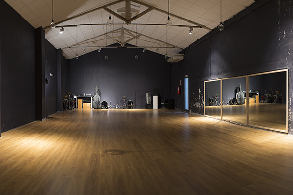
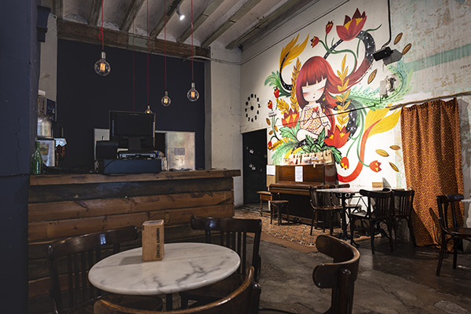

Te ofrecemos un fin de semana repleto de baile, ritmo, conexión y flow … ¡Ven!, somos una de las comunidades de baile fusión más vibrantes del sur de Europa.
Si vienes de fuera, podrás disfrutar tanto del baile como de un maravilloso destino turístico: Valencia. Aquí encontrarás sol, playas hermosas, una deliciosa gastronomía y un centro urbano que rebosa vida y cultura. Explorando la ciudad conocerás a otros viajeros y a los valencianos que estarán encantados de recomendarte aquellos sitios que no te puedes perder.
Para los de aquí esta será una oportunidad fantástica para conocer a bailarines de fusión de otras partes del mundo y vivir en primera persona la interpretación de la danza que se da en diferentes culturas. Podrás bailar con la música que pinchan unos DJs que raramente tenemos la oportunidad de escuchar. Este entorno y la ocasión harán que disfrutes de una experiencia maravillosa, conectándote con una comunidad de fusión más amplia.
Disfrutaremos de una oportunidad única para que todos podamos conectar a través del baile, conocer gente nueva y experimentar cosas diferentes. ¡Ven con nosotros y deja que fluya la magia!
El programa exacto se anunciará más adelante, pero haremos al menos las siguientes actividades:
La Escuela de Ruzafa, un espacio precioso cerca del centro de Valencia en la Calle Denia 32. Tendremos una pista con capacidad para 100 personas y un bar para tomar un descanso entre un baile y otro.
 ¿Qué es la fusión? La fusión es un estilo de baile centrado en la conexión y la interpretación conjunta de la música. Bailamos una amplia variedad de géneros musicales: desde música asociada a estilos específicos de baile hasta música electrónica, hip-hop y a veces algo completamente diferente, dependiendo del DJ.
Hay bailarines procedentes de diversos estilos, como el blues, kizomba, zouk, tango o improvisación de contacto. Cada baile es único, y siempre puedes esperar ver algo nuevo.
Este baile es fantástico incluso para principiantes: no se requiere ninguna experiencia previa. Puedes asistir sin preocupaciones y conectarte tanto con la música como con tu pareja, bailando como te sientas. Además, ofreceremos clases de cualquier nivel para ayudarte a empezar.
¿Viajas a Valencia para el evento? Aquí tienes algunos consejos útiles.
El evento se realizará en el centro de Valencia, uno de los principales destinos turísticos de España. Hay una amplia variedad de alojamientos disponibles en la zona; consulta tus páginas habituales para encontrar opciones que se ajusten a tu bolsillo.
Crearemos un grupo de WhatsApp para que los participantes interesados en compartir alojamiento puedan conectarse entre sí.
Valencia cuenta con excelentes conexiones de transporte: un aeropuerto bien comunicado y trenes de alta velocidad desde Madrid y Barcelona. También organizaremos un grupo de WhatsApp para aquellos que quieran viajar en coche compartido.
¿Estás deseando apuntarte al evento? ¡Pon aquí tus datos para recibir actualizaciones sobre el programa definitivo, inicio de venta de entradas y futuros eventos.
¿Tienes alguna pregunta, sugerencia o te gustaría colaborar? Ponte en contacto con Marcin Wosinek en marcin.wosinek@gmail.com, por WhatsApp +34 608 73 92 32.
Respeta a los demás y sé consciente de que cada persona tiene sus propios límites; más vale pecar por educado y respetuoso que al revés. Habla con los demás: pide permiso y marca tus límites si algo te incomoda.
Si alguien no respeta tus límites repetidamente, habla con nuestro equipo de asistencia o los organizadores.
Si experimentas alguna situación incómoda o ves algo que te preocupa, habla con nuestro equipo de asistencia o los organizadores.
Toma Nota: Si en algún momento has sido expulsado de una comunidad o evento de baile, por favor, contacta al organizador antes de comprar tu entrada. Queremos asegurarnos de que todos se sientan seguros, y necesitamos confirmar tu participación en el evento. Si no nos informas, podrías ser expulsado del mismo.